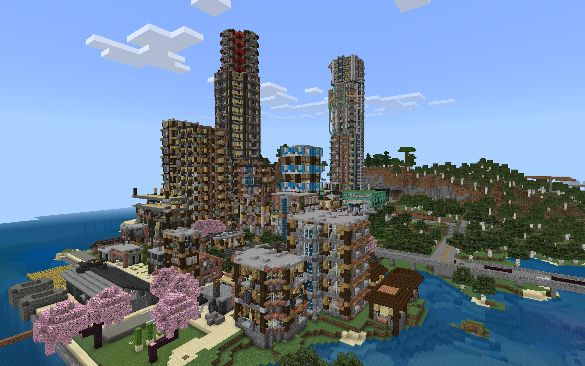

猫鯖というのは私が出入りしてるマイクラのサーバーである。
南賀電鐵という5駅のローカル線を永遠続けるつもりが周辺の開発者達がどっかいったため併合吸収合併してでっかくなちゃったらしい。(まあ自分で作った駅以外関心がなさすぎて放置してるのだが)
どんなサーバー？
私のワールドと比べるとかなり現代建築に寄っている。
平たく言うと需要にあった鉄道を運営しよう的サーバーである。
需要にあってて法を守ってりゃ何にも言われないので品質度外視で拡大しまくったり、逆に最低限の自社線引いて(私も併合吸収合併するまでは単線５駅の極小会社だった)一駅に引きこもりまくってもよし。
需要とか考えずにただマルチ鯖に身を置きたいだけって人なら一部ではあるが既存都市の開発要員に加わることもできる、らしい。
需要の基準は数値で明確にきまるので人によって不平等が生じることもないので興味がある人は来てみては。
鯖主のtwitterに参加したいとDMすればいける！多分(私自身は誘われて入ったので何とも言えない)。
BEのMinecraftのRealmsである。
で、どんな景色なのさ...
twitter上では#nekohimeCITYというタグをつけてツイートされている。
私もyoutubeで前面展望を出している。
お前さんはどこで何やってんだい

白森市(しらもりし)
人口 1126人(2024年2月現在)
白森駅という駅の直上にある街。
町並みがいつもの私の建築より現代建築によっている。
あくまでローカル線上の一駅なので電車は2-4両がメインである。